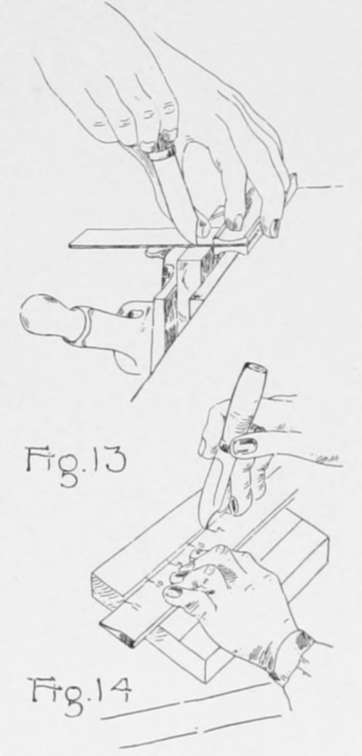
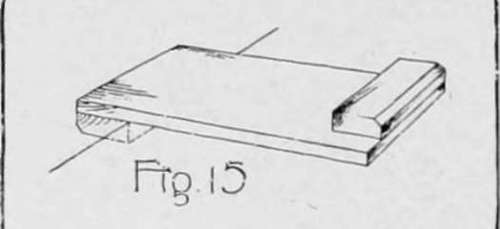
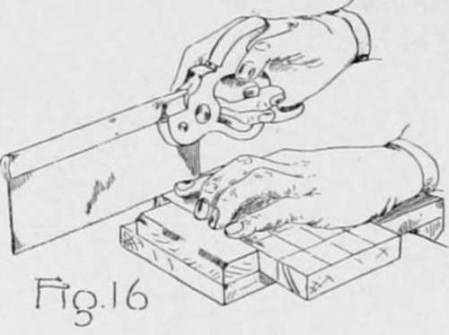
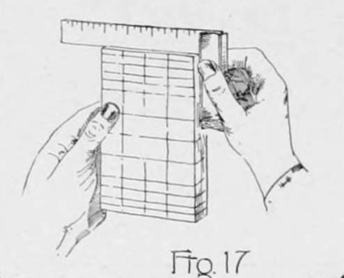
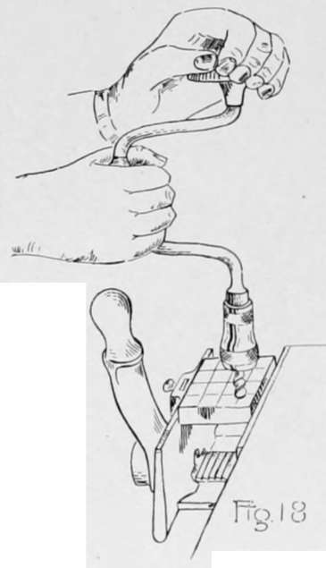
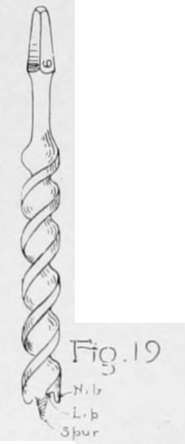
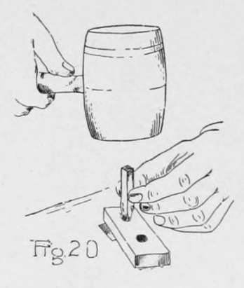
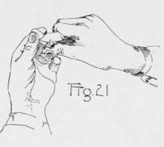
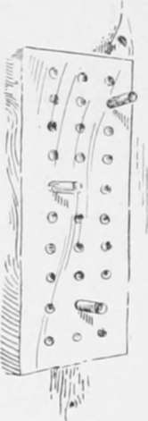
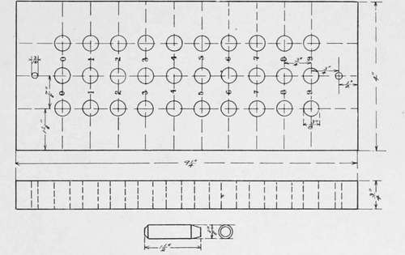

Laying Out And Sawing. Continued
Description
This section is from the book "Beginning Woodwork At Home And In School", by Clinton Sheldon Van Deusen. Also available from Amazon: Beginning Woodwork At Home And In School.
Laying Out And Sawing. Continued
(j) Through the three middle points thus marked, draw knife lines across the working face (as in g) and through the two end points thus marked, draw knife line square around the piece (as in h). The two lines drawn last, mark what are to be the ends of the piece when completed.
(k) On the surplus wood outside of these lines draw several lines square around the piece (as in h) to use as guide lines for practice sawing. Saw to these lines in the following manner: Place the bench-hook (Fig. 15) on the bench with the larger block hooked against the front side of the bench and, with the left hand, hold the piece against the block on the bench-hook. Take the back saw in your right hand and place the end of the saw nearest your hand on the edge of the piece farthest from you (Fig. 16) and draw the saw toward you with the nearer end of the saw higher than the farther end, the saw blade being held steady in the correct place by resting against the forefinger of your left hand. By drawing the saw toward you a second time before you really start sawing, a fairly deep cut or kerf will be formed, which will prevent the saw jumping out of place as it is pushed forward. The left hand side of this kerf should come exactly to the knife line you are sawing to. Saw with an even stroke but do not press down on the saw. Keep the forearm in line with the saw and watch closely the knife line as the sawing advances, bringing the cutting edge of the saw very gradually to a horizontal position.
(1) After sawing off a piece, test to see if the end is square with the working face and joint side in the following manner: Place the beam of the try-square against the joint side and slide it down until the blade touches the sawed surface (Fig. 17). If it touches entirely across the sawed end when the beam is tight against the joint side, the end is square with the joint side. In a similar manner test to see if the end is square with the working face.
(m) When you can saw well, saw the piece to the length denoted by the end lines drawn square around the piece in j.
(n) Bore a hole 3/8" in diameter through the piece at each point where a gage and knife line intersect. By holding the end of the brace (Fig. 18)-the end into which the bit is to be placed-in one hand, it will be found that by turning the middle part or crank around in one direction the jaws will open and the tapered end of the 3/8" auger-bit (Fig. 19) may be dropped between them. The jaws may then be closed tightly on the bit. Fasten the piece in the vise with the working face in a horizontal position. Place the spur of the bit (Fig. 19) exactly at the intersection of gage and knife lines. Hold the bit in a vertical position with the left hand on top of the brace and, with the right hand, turn the crank part of the brace in a clockwise direction as you are looking down on it, but do not press clown on the brace (Fig. 18). While boring change your position frequently so as to view the bit and brace from different directions that you may detect if it is not boring straight. When the spur of the bit pricks through the opposite side, turn the piece over and enter the bit in the hole pricked by the spur. Bore out the remainder of the hole, being careful that the bit does not suddenly drop through and splinter the edge of the hole on the opposite surface.
(o) From one of the 7/16" square pieces saw off a piece about 2" long. With the knife make a point on one end of it sufficient to enter it in the larger hole of the dowel plate. Place the dowel plate so that this hole is directly over one of the holes in the top of the bench and with the mallet drive the piece through this hole (Fig. 20), using light strokes. Do not drive the peg back through the hole to get it free from the dowel plate, but whittle a small peg and drive it on through the plate. In a similar manner drive it through the smaller hole which will bring it to a diameter that will fit freely in the holes bored.
Drive at least eight pieces through the dowel plate in this manner, but unless the grain is suitable and the driving done with care it may be necessary to drive more than eight pieces before enough good ones are obtained.
(p) Saw a length of 1 1/2" from the best part of eight of these pieces that have been driven through the dowel plate and with the knife cut off the edges (Fig. 21) of each end of the pegs at as near as possible the slant indicated by the drawing (Fig. 7). It should be remembered that these tapered edges should be in the form of a part of a cone and careless use of the knife may cause them to be a disfigurement to your piece.
(q) Four of these pegs should be dipped in ordinary writing ink and laid on paper to dry. When these are dry the board is ready for playing the game of tit-tat-toe which is familar to all Americans.
In Fig. 22 a working drawing of the counting board is given which requires almost identically the same steps in making as does the game board, but in addition the numbers indicated are necessary. These may be made with steel stencils, rubber stamps or even with a lead pencil. To make use of the counting board it should be fastened to the wall by two nails or screws passing through the small holes at the top and bottom. It may then be used to record any slow counting as the counting of bushels of grain emptied into a bin, the gallons of oil purchased in a year by a family, articles made in a factory, etc. The right hand column of holes corresponds with units, the middle column with tens, and the left hand column with hundreds. As each article is counted the peg in units column is moved down one hole and as each ten units is completed the units peg is returned to the zero hole and the peg in the tens column is moved down one hole. In a similar manner, as each ten tens is completed the peg in the tens column is returned to zero and the peg in the hundreds column is moved down one hole. The numbers by the side of the three pegs taken in order indicate the count as it stands at any time.
Counting Board.
Continue to: